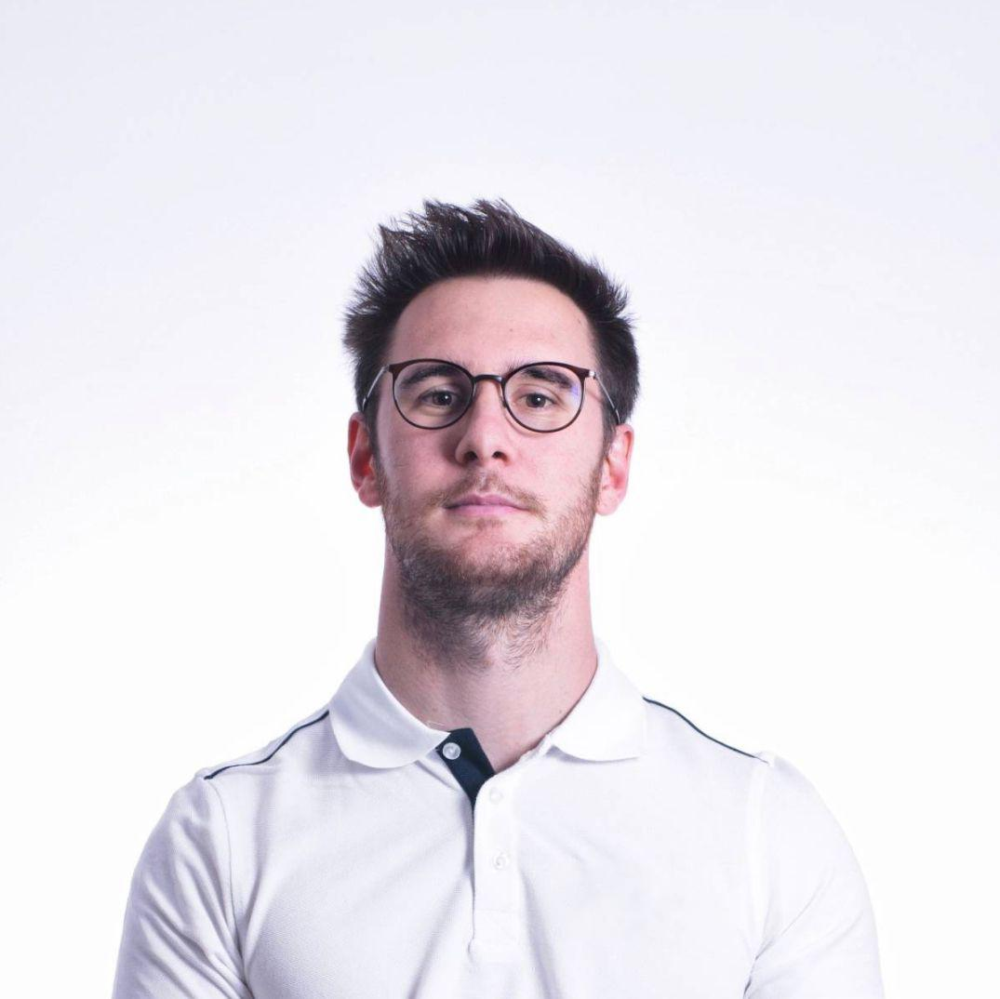

Dott. Simone Gerletti · Fisioterapista
Ti aiuto a tornare a muoverti
senza dolore
Percorsi di riabilitazione, massoterapia, ginnastica posturale e prevenzione, costruiti su misura per le tue abitudini, i tuoi ritmi e il tuo stile di vita.

Perché la fisioterapia
Potrebbe aiutarti a vivere le tue giornate come vuoi tu
Se dolori e fastidi muscolari ti impediscono di vivere le tue giornate come vorresti, posso aiutarti con un percorso mirato, studiato insieme a te in base alle tue abitudini, ai tuoi ritmi e al tuo stile di vita.
Che tu soffra di mal di schiena, mal di collo o dolori muscolari in generale, un trattamento fisioterapico può aiutarti ad alleviare i tuoi fastidi.
Testimonianze
Cosa dicono di me i pazienti
Alcune delle esperienze raccontate da chi ha seguito un percorso di fisioterapia con me.
Dopo l'operazione al ginocchio ero preoccupata per la ripresa. Simone mi ha seguita passo passo con un percorso su misura: oggi cammino e mi muovo senza nessun fastidio.
Professionalità e disponibilità fuori dal comune. Il massaggio decontratturante mi ha risolto un dolore alla schiena che portavo dietro da mesi.
Lavoro tutto il giorno al computer e la ginnastica posturale con Simone ha fatto una differenza enorme sulla mia postura e sui dolori al collo.
Gioco a tennis a livello agonistico e il programma di prevenzione che mi ha preparato mi ha aiutato ad affrontare la stagione senza il solito infortunio ricorrente.
Mio padre non riusciva più a spostarsi da solo dopo il ricovero. Le sedute a domicilio sono state una svolta, sia per lui che per la serenità di tutta la famiglia.
Il massaggio sportivo prima delle gare mi aiuta tantissimo sul recupero muscolare. Simone conosce bene le esigenze di chi si allena spesso.
Un percorso di ricondizionamento serio dopo il COVID: ho ripreso fiato e forze molto più velocemente di quanto pensassi.
Soffrivo di mal di schiena cronico da anni. Con costanza e gli esercizi giusti finalmente ho trovato sollievo, non solo un rimedio temporaneo.
Cercavo un massaggio rilassante per staccare dallo stress: ambiente curato, mani esperte e un risultato che si sente già dalla prima seduta.
Trattamenti
Un percorso pensato per te
Quattro aree di intervento, sempre personalizzate sulla persona che ho davanti.
Riabilitazione
Percorso riabilitativo post-operatorio o post-infortunio, per raggiungere il miglior risultato possibile dopo un intervento chirurgico, un trauma o un periodo di allettamento.
- Riabilitazione ortopedica
- Riabilitazione post-chirurgia
- Ricondizionamento post COVID-19
- Riabilitazione neurologica
- Riabilitazione cardio-respiratoria
Massaggio
Utile per risolvere tensioni e fastidi muscolari, diminuire il dolore a spalle, zona lombare e collo, e ritrovare la libertà di movimento.
- Massaggio decontratturante
- Massaggio sportivo
- Massaggio rilassante e linfodrenante
Ginnastica posturale
Esercizi mirati a ristabilire l'equilibrio muscolare, migliorare la postura e la capacità di controllo del corpo, agendo su zone rigide o dolenti.
- Riequilibrio muscolare
- Controllo del corpo e della postura
- Percorsi individuali su misura
Prevenzione
Programmi ad-hoc, sport-specifici e atleta-specifici, per correggere squilibri muscolari e posturali e ridurre il rischio di infortunio.
- Mobilità attiva e passiva
- Training propriocettivo e neuromuscolare
- Correzioni posturali ed esercizi pliometrici
- Stretching statico, dinamico e balistico
Chi sono
Dott. Simone Gerletti, Fisioterapista
Esercito la professione di fisioterapista dopo la laurea presso l'Università degli Studi dell'Insubria di Varese, con una tesi sperimentale sulla correlazione tra lombalgia cronica aspecifica ed equilibrio posturale statico e dinamico.
Il mio obiettivo, come professionista della salute, è aiutare le persone a raggiungere il loro miglior benessere psico-fisico attraverso la terapia manuale e l'esercizio terapeutico.
La sofferenza fisica può condizionare molto anche la nostra mente, ed è per questo che voglio aiutare quante più persone possibili a stare bene con il proprio corpo.
Esperienze internazionali
Contatti
La fisioterapia comodamente a casa tua
Scrivimi per un preventivo gratuito: rispondo il prima possibile per capire insieme come posso aiutarti.